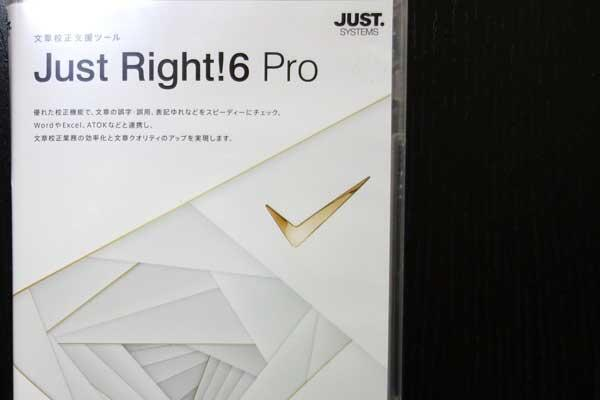
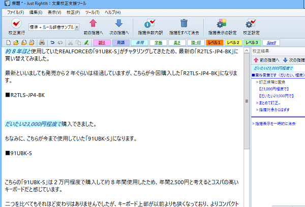
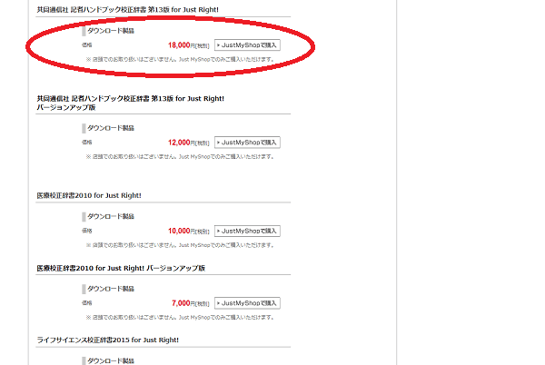

ブログ記事の校正に「Just Right!」を購入してみました
ブログ記事の校正用にジャストシステムの「Just Right!6 Pro」を購入してみました。

ジャストシステムといえば、一太郎やホームページビルダーで有名な会社ですが、そちらから発売されている文章校正の支援ソフトが「Just Right!6 Pro」になります。
希望小売価格が47,000円[税別]となっているため、税込で５万円以上はするのかもしれませんが、ぼくはヨドバシにて36,940円（税込）で購入しました。
さっそくパソコンにインストールしたのち、当ブログの記事で試してみましたが、コピペで文章を貼り付けたのち、「校正実行」ボタンをおすと結果をハイライトで表示してくれます。

結果、こちらの記事の場合では以下の３点でご指摘がありました。
- 「約８年ほど」→ 「８年ほど」もしくは「約８年」
- 「だいたい23,000円程度で」→ 「だいたい23,000円で」もしくは「23,000円程度で」
- 「ずらい」→ 「づらい」
主に「重ね言葉です」のご指摘を受けまして、同じ意味の言葉が重複しているということかと思います。ただ、より親切でわかりやすい文章を心がける場合、重ねた方が誤解を避けることができるため、ぼくはあえて意図的に重ね言葉を使用していました。
そのため、このあたりのご指摘については訂正すべきかで迷いがありますが、もう一つの「ずらい」については明確に「づらい」の誤りのため、訂正しておきました。
他サイトでも使用してみたところ、指摘された箇所は確かに読みづらくなっており、そこを修正するだけでコンテンツの精度が高くなった気がしております。
■共同通信社 記者ハンドブック校正辞書 第13版 for Just Right!
また、オプションでこちらの「共同通信社 記者ハンドブック校正辞書 第13版 for Just Right!」も購入しました。

こちらはパッケージ版が見あたらなかったため、公式ショップから19,800 円（税込）でダウンロード購入しましたが、他にも医療校正辞書やライフサイエンス校正辞書があるようです。
このオプションを購入するかで迷いがありましたが、既存ページを全て校正したあとに再度校正するとなると手間がかかるため、最初に全て用意しました。
ちなみに、日経新聞などの大手ニュースメディアの記事をJust Right!でチェックしてみますと、指摘箇所がほぼ出なかったため、大手サイトではきちんと校正した上で配信しているのだろうと思います。
実際に使用してみた感想としましては、価格以上の価値はあると感じていますが、あくまで支援ツールのため、自動で修正してくれるツールではありません。ソフトを使用する側でもある程度のライティングスキルは必要になるかと思いますので、ソフトに加えて、書籍などでライティングを勉強することも必要だなと感じています。